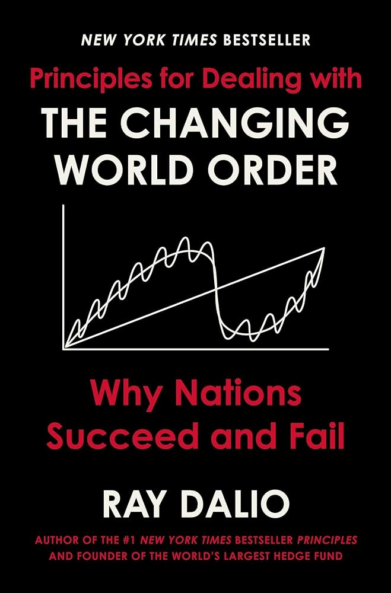

Princípios para a Ordem Mundial em Transformação
Preço: R$ 111.92
"Uma leitura provocativa... Há poucos tomos que mapeiam tão coerentemente histórias econômicas amplas quanto o Sr. Dalio. Talvez mais incomum, o Sr. Dalio conseguiu identificar métricas dessa história que podem ser aplicadas para entender o presente." —Andrew Ross Sorkin, The New York Times.
De Ray Dalio, investidor lendário e autor do best-seller número 1 do New York Times, Principles, que passou meio século estudando as economias e os mercados globais, Princípios para Lidar com a Ordem Mundial em Mudança examina os períodos econômicos e políticos mais turbulentos da história para revelar por que os tempos futuros provavelmente serão radicalmente diferentes daqueles que experimentamos em nossas vidas — e oferecer conselhos práticos sobre como navegar bem por eles.